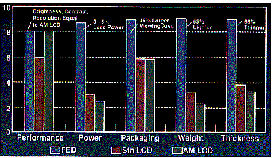

- 1. Vacuum Tubes, Semiconduct. Transistors, Microfab. Integrated Circuits
- a. General progression in electronics but tubes still superior in displays
- b. FED combines best of CRT's and microfabricated FPD's #1
- 1) High image quality afforded by phosphors
- 2) Microfabrication allows flat, lightweight, low-power
- 3) Brighter, wider viewing angle, more efficient than AMLCD's

- 4) Elimination of bulky deflection coils, inefficient optical filters
- 5) Simple, redundant design should decrease cost/increase yield
- 6) DFED's should have very lowest manufacturing costs
- 2. Key to FED is the cold micro-cathode (FEA's)
- a. Field-emission not thermionic emission
- b. Can microfabricate metal or silicon tips
- c. Can use diamond film as well
- d. Uniformity of microcathodes over LARGE surface is key
- e. Size limited: hard to cover LARGE area with identical sharp tips
- 1. AMLCD's still dominates (96% made in Japan) #1
- 2. When FED's perfected, they should takeover since superior
- 3. FED's may redeem struggling U.S. display technology
- 4. Many U.S. companies now vigorously developing FED's:
- a. Micron Display Technology Inc., Boise, Idaho
- 1) Already built two 0.7" prototypes (mono, color)
- 2) Prototypes partly funded by $10 Million Gov ARPA Grant
- 3) Currently working on 14" display
- b. SI Diamond Technology, Corp (SIDT) Houston, Texas
- 1) Allied with Microelectronics & Computer Tech. Corp.
- 2) Co-Inventor of DFED, Dr. Nalin Kumar works there
- 3) Already made the 1" prototypes
- c. FED Corporation (Hopewell Junction, NY)
- 1) Gary Jones president (worked with Temple et al.)
- 2) > $7 Million Gov Funding (Airforce, NASA, Army) #1
- 3) Collaborates with Lawrence Livermore / Sandia National Labs
- 4) Trying to reduce switching voltages to 5V level
- 5) Dedicated manufacturing facility to make 10.4" displays
- 6) Made 7.1" VGA displays for 1995
- 5. Future Applications:
- a. 1 inch thick hanging TV sets
- b. Low-cost, full-color lap-top computer displays
- c. Head-mounted displays
Main Outline
Sources